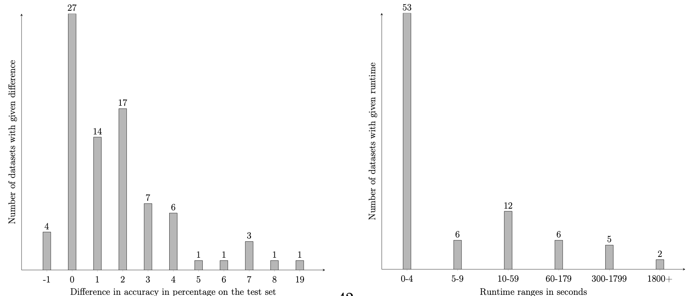

- 深さ 4 の時間切れ 19 個 → 0 個47 個のデータで深さ 4 の最適な木を求めたとき、制限時間 10 分で時間切れになったデータの数（DL8.5 → MurTree）。深さ 5 では 32 個 → 8 個だった。
- 383 秒 → 2 秒australian-credit で深さ 4 の最適な木を求める時間（DL8.5 → MurTree）。diabetes では 421 秒 → 2 秒だった。
- 深さ 2 は頻度表から特徴量の組ごとの頻度を一度数えれば、深さ 2 の最適な木はデータを見直さずに求められる。計算量は \(O(|D| \cdot |F|^2)\) から \(O(|D| \cdot m^2 + |F|^2)\) に下がる。
最適決定木の専用の方法の中では DL8.5 が最も速かったが、それでも深い木や特徴量の多いデータには時間がかかった
CART のような貪欲法は数秒で木を作るが、精度や大きさの点で最良の木とは限らない。最適な決定木を求める方法としては、整数計画、制約プログラミング、SAT による汎用の方法と、決定木に特化した方法が提案されてきた。後者の DL8 と DL8.5 が MurTree の出発点で、DL8.5 は二値のデータで完全二分木を求める問題において、ほかの方法を大きく上回ることが示されていた。
論文は、それまでの研究で用語や説明の仕方が違っていた考え方を、動的計画法と探索という標準的な枠組みにまとめ直す。そのうえで、決定木に固有の性質を使う新しい手法を加えて、計算時間を桁違いに減らす。
深さと分岐の数の上限のもとで誤分類の数を最小にする問題を、左右の部分木を独立に解く動的計画法として書く
特徴量はすべて二値に直して使う（実験では 22 個のデータを MDLP による離散化と one-hot 符号化で二値にした）。木の深さは葉までに通る分岐の最大数、大きさは分岐（特徴量の節点）の数である。決定木には 2 つの性質がある。1 つは、分岐がデータを左右に重なりなく分けるので、左右の部分木を独立に最適化できること（独立性）。もう 1 つは、葉に至る経路の特徴量の順序を入れ替えても分類が変わらず、\(D(f_1, f_2)\) と \(D(f_2, f_1)\) が同じ部分問題になること（重なり）である。データ \(D\)、深さの上限 \(d\)、分岐の数の上限 \(n\) での最小の誤分類の数 \(T(D, d, n)\) は次のように書ける。
最後の場合は、根で使う特徴量 \(f\) と、残りの分岐の数を左右にどう配るか（\(i\)）をすべて試すことを表す。DL8.5 は分岐の数を深さで決まる最大値に固定し、OSDT と GOSDT は分岐の数を制約にせず罰則として目的関数に入れていた。MurTree は分岐の数を直接制約にでき、この再帰を葉まで続けずに、深さ 2 の木が必要になった所で専用の手順に切り替える。
特徴量の組ごとの頻度を一度数えれば、深さ 2 の最適な木はデータを見直さずに求められる
上の再帰をそのまま使うと、深さ 2 の木を求めるには根の候補 \(|F|\) 通りそれぞれで子の候補を調べるので、データを \(2|F|^2\) 回分けることになり、\(O(|D| \cdot |F|^2)\) の時間がかかる（命題 3）。MurTree は 2 段階で計算する。
- 頻度を数える：正例と負例それぞれで、各特徴量 \(f_i\) が 1 である例の数 \(FQ(f_i)\) と、2 つの特徴量がともに 1 である例の数 \(FQ(f_i, f_j)\) を数える。特徴量が二値なので、\(f_i\) が 0 の場合や、片方だけが 1 の場合の数は引き算で求まる（例：\(FQ^+(\bar f_i) = |D^+| - FQ^+(f_i)\)）。
- 頻度から木を選ぶ：独立性から、左右の子の最良の特徴量は別々に選べる。特徴量の組 \((f_{\mathrm{root}}, f_{\mathrm{child}})\) を 1 回ずつ調べて根ごとに最良の左の子と右の子を更新し、最後に左右の誤分類の和が最小の根を選ぶ。
1 つの例に含まれる 1 の特徴量の数の上限を \(m\) とすると、計算量は \(O(|D| \cdot m^2 + |F|^2)\) になる（命題 6）。二値の特徴量はふつう疎なので、\(m\) は \(|F|\) よりずっと小さい。さらに、続けて呼ばれるデータは少数の例しか違わないことが多いので、前のデータとの差分 \(D_{\mathrm{in}}\)、\(D_{\mathrm{out}}\) だけで頻度を増減させる（増分計算）。差分が新しいデータより小さいときだけ増分で計算し、頻度表は左右の子のために 2 組持っておく。
前に解いた似た部分問題の誤分類の数から、取り除かれた例の数を引いたものを、新しい部分問題の下界にする
深さと分岐の数の上限が同じで、前に解いたデータ \(D_{\mathrm{old}}\) の最適な誤分類の数 \(T(D_{\mathrm{old}}, d, n)\) が分かっているとき、新しいデータ \(D_{\mathrm{new}}\) について次の下界が成り立つ（命題 9）。
この下界がすでに見つかっている最良の木から決まる上界を超えれば、その部分木は調べずに捨てられる。キャッシュによる下界と違って、同じ経路を前に探索している必要がない。
- DL8.5 の下界の改良：上界のもとで解が見つからなかった部分木の上界を下界として再利用する DL8.5 の方法に、子の部分木の下界も合わせて使う工夫を加えた。
- キャッシュ：深さと分岐の数の両方の制約を考えて、部分木と下界を保存する。経路（分岐の組）で引く方法と、届く例の集合で引く方法の 2 つを実装し、実験では例の集合で引くほうが同じか速かった。
- 増分的な求解：分岐の数を 1 から順に増やして木を求めるとき、前の計算を使い回す。ハイパーパラメータの調整のように、大きさの違う木を続けて求める場面で役に立つ。
- 拡張：多クラス分類、回帰、葉の数への罰則つきの目的関数、誤分類と大きさの辞書式の最小化、途中で止めても解を返す動作、非線形の評価指標にも広げられる。
DL8.5 と同じ問題を解くと、MurTree は多くのデータで桁違いに速く、深さ 4 では 47 個すべてを 10 分以内に解いた
実験には UCI や CP4IM などの 85 個の分類問題を使った。DL8.5 と同じ問題を解かせるため、MurTree の分岐の数の上限を深さ 4 では 15、深さ 5 では 31 とし、データ全体で最適な木を求める時間を比べた。制限時間は 10 分である。47 個のデータのうち、深さ 4 で DL8.5 が時間切れになったのは 19 個、MurTree は 0 個だった。深さ 5 では DL8.5 が 32 個、MurTree が 8 個で時間切れになった。たとえば深さ 4 では、australian-credit で 383 秒が 2 秒に、diabetes で 421 秒が 2 秒に、yeast で 186 秒が 2 秒になった。DL8.5 が時間切れになった ionosphere（特徴量 445 個）も、MurTree は 89 秒で解いた。
OSDT とは、深さ 4、制限時間 10 分で比べた。OSDT の論文で使われたデータでは、MurTree は数秒で最適な木を求めたが、OSDT は数分かかるか時間切れになった。GOSDT を 68 個のデータで、罰則の係数を既定値 \(0.01 \cdot |D|\)、制限時間 10 分で動かすと、65% のデータで時間切れになった。ただし GOSDT は小さな木を作ることを目的としており、問題の定義が違う点に論文は注意している。MurTree の計算時間は例の数に対してほぼ線形に増えた。深さ 3 の木は数秒、深さ 4 は数分で求まることが多いが、深さ 5 はデータによってはかなり難しい。
深さと分岐の数をすべての組合せで調整すると、MurTree の木は CART の木よりテスト精度が一貫して高かった
84 個のデータで、層化 5 分割交差検証のグリッドサーチでハイパーパラメータを決め、深さ 1〜4 で調整した CART と比べた。MurTree は 3 通りに調整した。CART の木の深さと分岐の数にそのまま合わせると（MT-F）、訓練精度は高いのにテスト精度は CART とほぼ同じだった。論文は、CART の木の形がそのデータに合っていない可能性を挙げている。CART の木を上限として調整すると（MT-R）多くのデータで良くなり、深さ 1〜4 と分岐の数をすべて調整すると（MT-A）一貫して CART よりテスト精度が高かった（図1）。計算時間は CART がほとんど 1 秒未満で、MurTree はずっと長いが、多くの応用では許容できると論文は述べている。
ランダムフォレストは訓練精度でもテスト精度でも有利だった。それでも、およそ半数のデータでは深さ 4 の最適な木が同程度の精度だった。

MurTree は DL8 から続く動的計画法の系統を、深さ 2 の専用の手順と下界でまとめ直し、のちの研究の比較の基準になった
- 解き方：アイテム集合（届く例の集合）ごとの動的計画法と探索。深さ 2 の部分は頻度表による専用の手順で解く。
- 目的と制約：深さと分岐の数の上限のもとで誤分類の数を最小にする。葉の数への罰則つきの目的関数、多クラス分類、回帰などにも広げられる。
- 限界：特徴量は事前に二値化する必要があり、論文は離散化の方法の検討を今後の課題としている。深さ 5 の木はデータによってはまだ難しい。深さ 3 の専用の手順も試したが、予備実験では実際の利点が見られなかった。
- その後：同じ Delft のグループの van der Linden らは、最適な木と貪欲な木を多くのデータでそろえて比べ直している。
@article{demirovic2022murtree,
title = {{MurTree}: Optimal Decision Trees via Dynamic Programming and Search},
author = {Demirovi{\'c}, Emir and Lukina, Anna and Hebrard, Emmanuel and Chan, Jeffrey and Bailey, James and Leckie, Christopher and Ramamohanarao, Kotagiri and Stuckey, Peter J.},
journal = {Journal of Machine Learning Research},
volume = {23},
number = {26},
pages = {1--47},
year = {2022},
url = {http://jmlr.org/papers/v23/20-520.html}
}
ページの数値と図は JMLR の出版版による。書誌は JMLR の BibTeX で確認した。論文と JMLR のページはコードの場所として bitbucket.org/EmirD/murtree を挙げている（GitHub にも MurTree/murtree がある）。